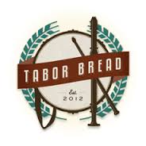

Professional Work Experience
2003 - 2016
Tabor Bread
Administrative Manager
February 2014 – October 2015
Bookkeeping, managing wholesale customer accounts, generating payroll, taking bi- monthly inventory of our assets, determining cost of production for pastry and bread, and calculating profit margins based on net sales. Worked with the business owner to restructure our pay structure and work schedule for employees, cutting cost of labor dramatically and increasing net sales significantly, bringing us from a company that lost money every month to a company that consistently stays in the black. Responsible for all communications with bank and credit card processors. Was responsible for facilitating a transfer to an improved point of sales system for our front of house, which included a long series of negotiations and purchases with the bank. The job has helped me to sharpen my interpersonal communication skills with coworkers, as I am frequently juggling messages between departments. I have played the role of mediator during employee conflicts on more than one occasion. Advertising: I created flyers for events held by our bakery using photoshop and have also created templates for designs which were then outsourced to professionals. I wrote an educational article for the Baker's Guild of America magazine, Breadline, which helped garner publicity for the bakery and improved our national visibility.
Sightworks
Administrative Manager
February 2014 – October 2015
Freshbooks and Quickbooks Data Entry Payroll Processing and check distribution Client communications regarding overdue accounts Clerical tasks (processing mail, filing papers, answering phones) Copywriting: Wrote numerous blog articles, user testing journals, and case studies Studied large quantities of information in short periods of time Crafted concise articles that communicated all necessary key ideas.
Float Shoppe
Front Desk and Shop Maintenance
5/2013 – 10/2013
Clerical and administrative duties. Operated front desk including answering phone calls and emails, booking appointments, greeting customers, cash register. Introduced first time customers to floating through private dialogues Cleaning tanks, laundry, shop hygiene, opening and closing shop
Erewhon Natural Foods
Tonic Bar Assistant Manager
3/2012 – 9/2012
Full time supervisor of an internationally renowned herbal elixir bar. Created custom juice, smoothies, and medicinal teas while operating register Internalized large amounts of information on natural health strategies and educated customers. Includes Chinese and ayurvedic medicine, juicing, etc. Organized in-store events to promote upcoming products and boost sales Impeccable history with money handling and register drops at end of shift Successfully implemented superior manager’s policy changes
Artist Portfolio
2005 - 2016
During high school and my first year of college I played in an instrumental rock band. Here is an excerpt from a wikipedia entry about us:
"Piglet was a short-lived, Chicago-based instrumental math rock band formed by the former members of the band Seyarse.[1] Their style of music is labeled such things as "math rock," "indie rock', "post rock" "experimental rock," and instrumental rock, among others. The song structures mainly focus around clean and melodic, yet heavily complicated and technical playing which contains pleasant hooks, backed by fittingly technically demanding drumming."
Above are the book covers of two full length titles that I published in 2014 and 2015. I also contributed an essay to an anthology called the Sync Book Volume 2, which is positioned between the two book cover images. Here is a description of the books, taken from my Amazon author page.
"ASTROMUSIK explores a practical method of musical magick that translates words, planets, and stars into musical melodies. It is, in essence, a form of musical cryptography. From these seed-melodies, entire songs can be created. This book Astromusik is the first in a series of three. My primary goal in writing Astromusik was to draw attention to the major historical relevance of astrology/astronomy in the formation of Western music. What I discovered was a musical cryptogram, first introduced in its complete form by a musician and magician named Paul Foster Case. In my book, astromusik, I lay out some key concepts regarding the origins of Case's musical cryptogram, from the ancient philosophical roots of cosmic music, the founding of the Hermetic Order of the Golden Dawn in London 1888, to Paul Foster Case establishing the Builders of the Adytum during in the early to mid 1920's.
This book tracks the broad network of political and ideological forces driving key magickal groups during the 20th century. These were the very groups responsible for inspiring Paul Case to design an astro-musical cipher. There is a practical technique outlined in this series. I have decided to call it the Tone Color Alchemy method. In doing so I pay homage to Edward Maryon and build upon Paul Foster Case's initial vision for the 21st century. Everything can be translated into melodic packets to create Musical Sigils. These sigils are mental seeds that can become the basis of a song. This book series is appropriate for serious students of music looking to bridge the Western Mystery Traditions of astrology, kabbalah, and plant medicine with the art of music composition. Visit the Plant Music page for audio examples of musical cryptograms, written for various members of the plant kingdom.
I created a website in 2015 called Audiomancy, where all of my articles and music are available to the public for free. Here is a link to the website if you would like to explore further. (Audiomancy Website)
Programming Goal
The major lesson I learned from researching and writing the content for my books was that music is a kind of pre-digital programming language. My interest in music cryptography led me to the development of an app that would allow people to explore the idea for themselves. I've created a wireframe that details each section of the mobile application. All of the art and concept design is ready for the development phase, but I couldn't afford the cost of production. Here is the image:

As you can see, I have put a lot of time, thought, and energy into this music cryptography project. My goal in learning how to program includes being capable of designing a mobile app from the ground up, including a Midi substitution cipher program and a simple sheet music editing engine.
Read more about the music app idea here. (iPhone Music Cryptography App)